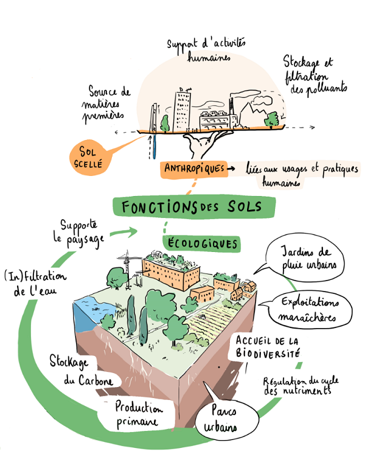

Comment le changement climatique affecte-t-il l’oxygène que nous respirons et les sols ?
L'oxygène:
Le réchauffement climatique a des effets néfastes sur la qualité de l'air, y compris sur les niveaux d'oxygène. L'augmentation des températures favorise la formation de polluants comme l'ozone troposphérique, qui peut réduire la qualité de l'air et nuire à la santé respiratoire. Par ailleurs, les périodes de sécheresse et les vagues de chaleur prolongées augmentent la fréquence et l'intensité des incendies de forêt, libérant des quantités importantes de dioxyde de carbone et d'autres gaz polluants, ce qui peut indirectement affecter les niveaux d'oxygène. Les écosystèmes marins, qui produisent une grande partie de l'oxygène atmosphérique grâce au phytoplancton, sont également menacés par le réchauffement des océans et l'acidification, perturbant la photosynthèse et la production d'oxygène. En somme, le changement climatique affecte non seulement la qualité de l'air que nous respirons, mais aussi les processus naturels qui maintiennent les niveaux d'oxygène dans l'atmosphère.
Les sols:
Le réchauffement climatique a des conséquences profondes sur les sols, qui sont des éléments cruciaux pour la productivité agricole, la régulation de l'eau et la biodiversité. L'augmentation des températures et les changements dans les régimes de précipitations peuvent accroître l'évaporation, réduisant l'humidité du sol et entraînant des périodes de sécheresse plus fréquentes et intenses. Cela peut diminuer la fertilité du sol, affectant la croissance des plantes et réduisant les rendements agricoles. De plus, les événements météorologiques extrêmes, comme les inondations et les tempêtes, peuvent entraîner une érosion accrue, emportant la couche arable riche en nutriments et laissant des sols dégradés. Le dégel du pergélisol, en particulier dans les régions boréales et arctiques, libère du méthane et du dioxyde de carbone, aggravant encore le changement climatique. En conséquence, les sols peuvent devenir moins capables de stocker le carbone, exacerbant le cycle du réchauffement climatique.
